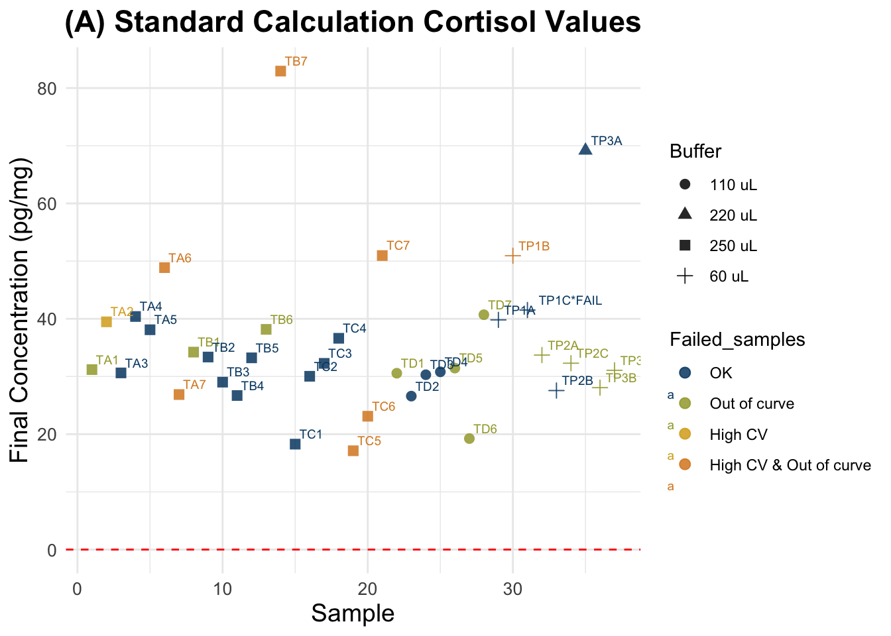
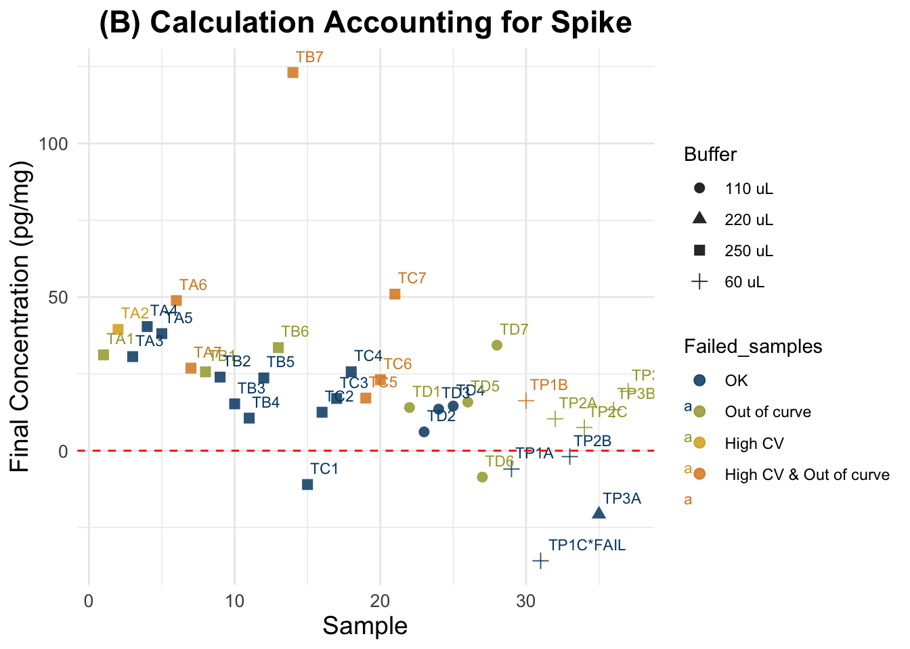
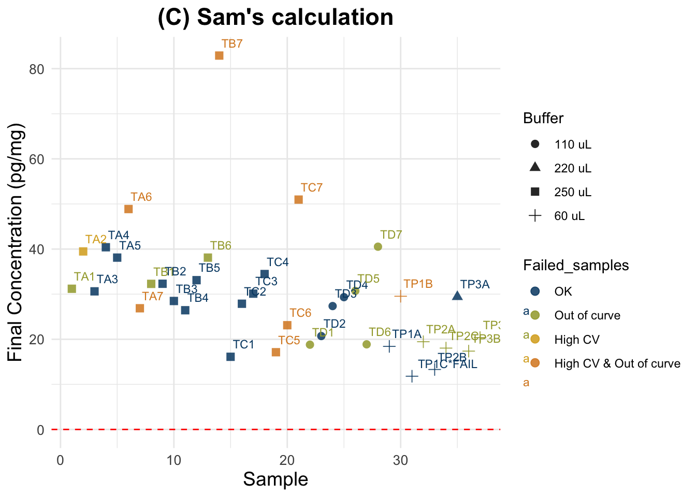
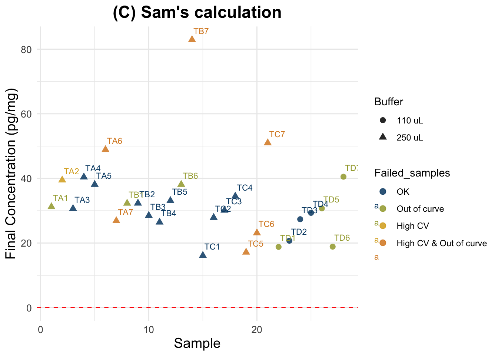
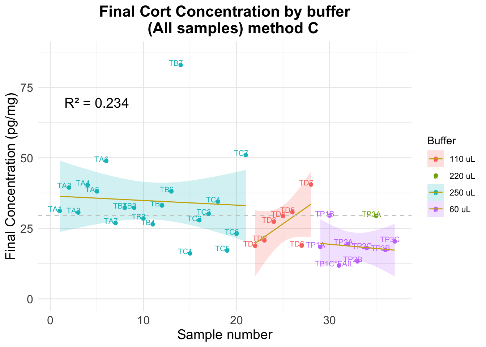

Last updated: 2025-04-23
Checks: 6 1
Knit directory:
HairCort-Evaluation-Nist2020/
This reproducible R Markdown analysis was created with workflowr (version 1.7.1). The Checks tab describes the reproducibility checks that were applied when the results were created. The Past versions tab lists the development history.
The R Markdown file has unstaged changes. To know which version of
the R Markdown file created these results, you’ll want to first commit
it to the Git repo. If you’re still working on the analysis, you can
ignore this warning. When you’re finished, you can run
wflow_publish to commit the R Markdown file and build the
HTML.
Great job! The global environment was empty. Objects defined in the global environment can affect the analysis in your R Markdown file in unknown ways. For reproduciblity it’s best to always run the code in an empty environment.
The command set.seed(20241016) was run prior to running
the code in the R Markdown file. Setting a seed ensures that any results
that rely on randomness, e.g. subsampling or permutations, are
reproducible.
Great job! Recording the operating system, R version, and package versions is critical for reproducibility.
Nice! There were no cached chunks for this analysis, so you can be confident that you successfully produced the results during this run.
Great job! Using relative paths to the files within your workflowr project makes it easier to run your code on other machines.
Great! You are using Git for version control. Tracking code development and connecting the code version to the results is critical for reproducibility.
The results in this page were generated with repository version 7240d2e. See the Past versions tab to see a history of the changes made to the R Markdown and HTML files.
Note that you need to be careful to ensure that all relevant files for
the analysis have been committed to Git prior to generating the results
(you can use wflow_publish or
wflow_git_commit). workflowr only checks the R Markdown
file, but you know if there are other scripts or data files that it
depends on. Below is the status of the Git repository when the results
were generated:
Ignored files:
Ignored: .DS_Store
Ignored: .RData
Ignored: .Rhistory
Ignored: analysis/.DS_Store
Ignored: analysis/.Rhistory
Ignored: analysis/figure/
Ignored: data/.DS_Store
Ignored: data/Test3/.DS_Store
Ignored: data/Test4/.DS_Store
Untracked files:
Untracked: data/Test4/Data_cort_values_method_ALL.csv
Unstaged changes:
Modified: analysis/ELISA_Analysis_FinalVals_comparisons_test3_test4.Rmd
Modified: analysis/ELISA_Analysis_FinalVals_test4.Rmd
Modified: analysis/ELISA_Calc_FinalVals_test3.Rmd
Modified: analysis/ELISA_Calc_FinalVals_test4.Rmd
Modified: data/Test3/Data_Cortisol_Processed.csv
Modified: data/Test3/Data_QC_flagged.csv
Modified: data/Test3/Data_cort_values_methodA.csv
Modified: data/Test3/Data_cort_values_methodB.csv
Modified: data/Test3/Data_cort_values_methodC.csv
Deleted: data/Test3/Data_cort_values_methodD.csv
Modified: data/Test4/Data_Cortisol_Processed.csv
Modified: data/Test4/Data_QC_flagged.csv
Modified: data/Test4/Data_cort_values_methodA.csv
Modified: data/Test4/Data_cort_values_methodB.csv
Modified: data/Test4/Data_cort_values_methodC.csv
Note that any generated files, e.g. HTML, png, CSS, etc., are not included in this status report because it is ok for generated content to have uncommitted changes.
These are the previous versions of the repository in which changes were
made to the R Markdown
(analysis/ELISA_Calc_FinalVals_test4.Rmd) and HTML
(docs/ELISA_Calc_FinalVals_test4.html) files. If you’ve
configured a remote Git repository (see ?wflow_git_remote),
click on the hyperlinks in the table below to view the files as they
were in that past version.
| File | Version | Author | Date | Message |
|---|---|---|---|---|
| Rmd | 7240d2e | Paloma | 2025-04-22 | organized files |
| html | 7240d2e | Paloma | 2025-04-22 | organized files |
| Rmd | 82ad928 | Paloma | 2025-04-17 | upd |
| html | 82ad928 | Paloma | 2025-04-17 | upd |
| Rmd | 16ce91c | Paloma | 2025-04-10 | recalc_evaluations |
| html | 16ce91c | Paloma | 2025-04-10 | recalc_evaluations |
| html | bbb70a9 | Paloma | 2025-04-09 | comparing methods |
| Rmd | ccad031 | Paloma | 2025-04-09 | new_calc |
| html | ccad031 | Paloma | 2025-04-09 | new_calc |
| html | 77c2ab5 | Paloma | 2025-04-08 | cleaning test3 |
| Rmd | ced6eed | Paloma | 2025-04-03 | upd |
| html | ced6eed | Paloma | 2025-04-03 | upd |
| Rmd | ca6c804 | Paloma | 2025-04-03 | new calc final vals |
| html | ca6c804 | Paloma | 2025-04-03 | new calc final vals |
| Rmd | 528855b | Paloma | 2025-04-03 | new_calc |
| html | 528855b | Paloma | 2025-04-03 | new_calc |
Cortisol value calculations (includes bad quality samples, n = 41)
| Min. | 1st Qu. | Median | Mean | 3rd Qu. | Max. | NA’s | |
|---|---|---|---|---|---|---|---|
| A) Standard Method (mult. by sample dilution) | 17.13 | 29.01 | 32.27 | 35.28 | 39.47 | 82.94 | 4 |
| B) Spike-Corrected Method (Nist 2020) | -45.870 | -35.833 | -5.960 | -3.488 | 23.109 | 50.963 | 4 |
| C) Spike-Corrected (Sam’s Method) | 7.472 | 18.533 | 24.559 | 27.009 | 31.196 | 80.804 | 4 |
Cortisol value calculations (removed bad quality samples)
| Min. | 1st Qu. | Median | Mean | 3rd Qu. | Max. | |
|---|---|---|---|---|---|---|
| A) Standard Method (mult. by sample dilution) | 18.27 | 29.27 | 31.54 | 34.13 | 37.73 | 69.17 |
| B) Spike-Corrected Method (Nist 2020) | -39.371 | -34.855 | -20.577 | -14.325 | -6.825 | 40.400 |
| C) Spike-Corrected (Sam’s Method) | ** 11.80** | 18.45 | 24.09 | 24.05 | 30.32 | 40.40 |
Results:
Intra-assay CV: 14.5%
Intra-assay CV after removing low quality samples: 10%
Inter-assay CV: 21% (Bindings for 20mg sample diluted in 250 uL, no spike: 64.8% and 48% in test3 and test4, respectively)
Conclusions:
Concerns: Overall quality of the plate is not great, but serial dilusions show clear parallelism and standards have values within the expected
Ave_Conc_pg/ml: average ELISA reading per sample in pg/mL
Weight_mg: hair weight in mg
Buffer_nl: assay buffer volume in nL → we convert to mL
Spike: binary indicator (1 = spiked sample)
SpikeVol_uL: volume of spike added in µL
Dilution: dilution factor (already present)
Vol_in_well.tube_uL: total volume in well/tube in µL (for spike correction)
std: standard reading value
extraction: methanol volume ratio = vol added / vol recovered (e.g. 1/0.75 ml)
Parameters and unit transformations:
# Volume of methanol used for cortisol extraction varies, so it is included in file
# as Extraction_ratio (vol added / vol recovered) in mL
# Reading of spike standard and conversion to ug/dl
std <- (3191 + 3228) / 2 # test 4 backfit
std.r <- std / 10000 # std in ul/dl
# Creating variables in indicated units
df$Buffer_ml <- c(df$Buffer_nl/1000) # dilution (buffer)
df$Ave_Conc_ug.dl <- c(df$Ave_Conc_pg.ml/10000) # Transform to μg/dl from assay outputIdentify and flag bad quality samples
ABOVE 80% binding HIGH CV HIGH CV;ABOVE 80% binding
4 2 7
HIGH CV;UNDER 20% binding OK UNDER 20% binding
1 60 8 Formula:
((A/B) * (C/D) * E * 10,000 * SLd) = F
##################################
##### Calculate final values #####
##################################
data$Final_pg.mg_A <- c(
((data$Ave_Conc_ug.dl) / data$Weight_mg) * # A/B *
data$Extraction_ratio * # C/D *
data$Buffer_ml * 10000 * data$Dilution_sample) # E * 10000 * SPd Summary of all samples (n = 37 ): Min. 1st Qu. Median Mean 3rd Qu. Max.
17.13 29.01 32.27 35.28 39.47 82.94 Summary for good quality samples only (n = 18 ): Min. 1st Qu. Median Mean 3rd Qu. Max.
18.27 29.27 31.54 34.13 37.73 69.17 We followed the procedure described in Nist et al. 2020:
“Thus, after pipetting 25μL of standards and samples into the appropriate wells of the 96-well assay plate, we added 25μL of the 0.333ug/dL standard to all samples, resulting in a 1:2 dilution of samples. The remainder of the manufacturer’s protocol was unchanged. We analyzed the assay plate in a Powerwave plate reader (BioTek, Winooski, VT) at 450nm and subtracted background values from all assay wells. In the calculations, we subtracted the 0.333ug/dL standard reading from the sample readings. Samples that resulted in a negative number were considered nondetectable. We converted cortisol levels from ug/dL, as measured by the assay, to pg/mg—based on the mass of hair collected and analyzed using the following formula:
A/B * C/D * E * 10,000 * 2 = F
where
##################################
##### Calculate final values #####
##################################
# spike is already divided by 10000 (unit is ug/dL)
data$Final_pg.mg_B <-
ifelse(
data$Spike == 1, ## Only spiked samples
((data$Ave_Conc_ug.dl - (std.r)) / # (A-spike)
data$Weight_mg) # / B
* data$Extraction_ratio * # C / D
data$Buffer_ml * 10000 * 2 / data$Dilution_sample, # E * 10000 * 2
data$Final_pg.mg_A
)Summary all samples: Min. 1st Qu. Median Mean 3rd Qu. Max.
-35.8333 -4.9214 -0.7156 8.3223 23.1087 50.9630 Summary good quality samples only: Min. 1st Qu. Median Mean 3rd Qu. Max.
-35.833 -8.565 -5.441 -1.642 -2.940 40.400 Simplifies unnecessary unit transformations and accounts for spike considering dilution of both sample and the spike
Step 1: Calculate contribution of spike
X * Y / Z / SPd = SP
# Transforming units
data$SpikeVol_ml <- data$SpikeVol_ul/1000 # X to mL
data$Vol_in_well.tube_ml <- data$Vol_in_well.tube_ul/1000 # Z to mL
# Calculate spike contribution to each sample
## ( Spike vol. x Spike Conc.)
## ------------------------ / dilution = Spike contribution
## Total vol.
# Calculate cort contribution of spike to each sample
data$Spike_contribution <- ((data$SpikeVol_ml * std / # X * Y
data$Vol_in_well.tube_ml) / # Z /
data$Dilution_spike) # SPThe reading for standard 1 in this plate is 3209.5The total contribution of the Spike to each sample is can be any of the following numbers (in pg/ml) [1] 0.000000 291.772727 160.475000 80.237500 40.118750 20.059375
[7] 10.029688 5.014844 1604.750000 802.375000 401.187500 200.593750
[13] 100.296875 50.148438 25.074219 1604.750000Step 2 : Substract spike and calculate final values
((A - SP)/B) * (C/D) * E * SLd = F
##################################
##### Calculate final values #####
##################################
data$Final_pg.mg_C <-
(((data$Ave_Conc_pg.ml - data$Spike_contribution)) / # (A - spike)
data$Weight_mg) * # / B *
data$Extraction_ratio * # C / D *
data$Buffer_ml * data$Dilution_sample # E * SLd Summary for all samples: Min. 1st Qu. Median Mean 3rd Qu. Max.
7.472 18.533 24.559 27.009 31.196 80.804 Summary for good quality samples only: Min. 1st Qu. Median Mean 3rd Qu. Max.
11.80 18.45 24.09 24.05 30.32 40.40 | Sample | Final_pg.mg_A | Final_pg.mg_B | Final_pg.mg_C | Spike_contribution | Binding.Perc | SpikeVol_ul | Dilution_sample | Dilution_spike | Extraction_ratio | |
|---|---|---|---|---|---|---|---|---|---|---|
| 32 | TP2A | 33.71556 | 10.373333 | 19.45111 | 1604.75 | 17.3 | 25 | 1 | 1 | 1.333333 |
| 33 | TP2B | 27.56444 | -1.928889 | 13.30000 | 1604.75 | 21.1 | 25 | 1 | 1 | 1.333333 |
| 34 | TP2C | 32.30222 | 7.546667 | 18.03778 | 1604.75 | 18.1 | 25 | 1 | 1 | 1.333333 |
| 35 | TP3A | 69.17117 | -20.686937 | 29.41385 | 1604.75 | 23.2 | 25 | 1 | 1 | 1.351351 |
| 36 | TP3B | 28.06667 | 13.340000 | 17.36833 | 1604.75 | 15.5 | 25 | 1 | 1 | 1.333333 |
| 37 | TP3C | 31.07333 | 19.353333 | 20.37500 | 1604.75 | 13.9 | 25 | 1 | 1 | 1.333333 |
Final cortisol concentrations not accounting for spike. Tags are sample numbers.
Expected results: a straight horizontal line showing that I obtained same cortisol concentration value in the Y axis, across different sample weights.

Final cortisol concentrations accounting for Spike as instructed in Nist et al. 2020.
Expected results: lower values than in the previous plot for the spiked samples, but not as low as negative samples (for all of them). Spiked and non-spiked samples should be aligned (same concentration across different weights)

| Version | Author | Date |
|---|---|---|
| 528855b | Paloma | 2025-04-03 |
Final cortisol concentration values using new method.
Expected results: one unique horizontal line, regardless of the spiking status and dilution.

| Version | Author | Date |
|---|---|---|
| 528855b | Paloma | 2025-04-03 |

1 2 3 4 5 6
-1.5529150 6.7241120 -2.1272393 7.6511391 5.3484364 16.1160039
7 8 9 10 11 12
-5.8818339 -0.4673458 -1.5151943 -5.8751943 -8.1898609 -1.6618609
13 14 15 16 17 18
3.2768057 48.0554724 -16.6360663 -7.0417902 -9.1273121 -13.4168744
19 20 21 22 23 24
-15.6229350 -9.6401202 18.2141020 -2.9485709 -6.9085709 -3.2125709
25 26 27 28 29 30
-2.7080376 -2.0685709 -14.2735843 7.1913757 1.8057199 12.9257199
31 32 33 34 35 36
-4.8100208 1.7398521 -4.4112591 0.3265187 10.6022800 -1.4432381
37
1.5634286 8 9 10 11 12 13
1.22011840 0.17226991 -4.18773008 -6.50239675 0.02560325 4.96426991
14 15 16 17 18 22
49.74293657 -14.94860214 -5.35432605 -7.43984793 -11.72941022 -2.62549967
23 24 25 26 27 28
-6.58549967 -2.88949967 -2.38496634 -1.74549967 -13.95051300 7.51444699
29 30 31 32 33 34
1.49207452 12.61207452 -5.12366621 1.56264592 -4.58846519 0.14931259
35 36 37
10.56151312 -1.48400489 1.52266177 1 2 3 4 5 6 7
-3.475790 4.801237 -4.050114 5.728264 3.425561 14.193129 -7.804709
19 20 21
-17.545810 -11.562995 16.291227 
Error using spiked samples only
Mean Absolute Error (MAE) ALL: 6.781 Standard Deviation of Residuals ALL: 11.85 Error using non-spiked samples only
Mean Absolute Error (MAE) ALL: 8.888 Standard Deviation of Residuals ALL: 10.88 Error using all samples
Mean Absolute Error (MAE) ALL: 7.651 Standard Deviation of Residuals ALL: 11.53
sessionInfo()R version 4.5.0 (2025-04-11)
Platform: aarch64-apple-darwin20
Running under: macOS Sequoia 15.4.1
Matrix products: default
BLAS: /Library/Frameworks/R.framework/Versions/4.5-arm64/Resources/lib/libRblas.0.dylib
LAPACK: /Library/Frameworks/R.framework/Versions/4.5-arm64/Resources/lib/libRlapack.dylib; LAPACK version 3.12.1
locale:
[1] en_US.UTF-8/en_US.UTF-8/en_US.UTF-8/C/en_US.UTF-8/en_US.UTF-8
time zone: America/Detroit
tzcode source: internal
attached base packages:
[1] stats graphics grDevices utils datasets methods base
other attached packages:
[1] dplyr_1.1.4 paletteer_1.6.0 broom_1.0.8 ggplot2_3.5.2
[5] knitr_1.50
loaded via a namespace (and not attached):
[1] sass_0.4.10 generics_0.1.3 tidyr_1.3.1 prismatic_1.1.2
[5] lattice_0.22-6 stringi_1.8.7 digest_0.6.37 magrittr_2.0.3
[9] evaluate_1.0.3 grid_4.5.0 fastmap_1.2.0 Matrix_1.7-3
[13] rprojroot_2.0.4 workflowr_1.7.1 jsonlite_2.0.0 whisker_0.4.1
[17] backports_1.5.0 rematch2_2.1.2 promises_1.3.2 mgcv_1.9-1
[21] purrr_1.0.4 scales_1.3.0 jquerylib_0.1.4 cli_3.6.4
[25] rlang_1.1.6 splines_4.5.0 munsell_0.5.1 withr_3.0.2
[29] cachem_1.1.0 yaml_2.3.10 tools_4.5.0 colorspace_2.1-1
[33] httpuv_1.6.16 vctrs_0.6.5 R6_2.6.1 lifecycle_1.0.4
[37] git2r_0.36.2 stringr_1.5.1 fs_1.6.6 pkgconfig_2.0.3
[41] pillar_1.10.2 bslib_0.9.0 later_1.4.2 gtable_0.3.6
[45] glue_1.8.0 Rcpp_1.0.14 xfun_0.52 tibble_3.2.1
[49] tidyselect_1.2.1 rstudioapi_0.17.1 farver_2.1.2 nlme_3.1-168
[53] htmltools_0.5.8.1 rmarkdown_2.29 labeling_0.4.3 compiler_4.5.0